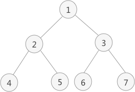

二叉树中序遍历（递归和非递归）算法C语言实现
二叉树中序遍历的实现思想是：
因此，图 1 中二叉树采用中序遍历得到的序列为：
中序遍历的非递归方式实现思想是：从根结点开始，遍历左孩子同时压栈，当遍历结束，说明当前遍历的结点没有左孩子，从栈中取出来调用操作函数，然后访问该结点的右孩子，继续以上重复性的操作。
除此之外，还有另一种实现思想：中序遍历过程中，只需将每个结点的左子树压栈即可，右子树不需要压栈。当结点的左子树遍历完成后，只需要以栈顶结点的右孩子为根结点，继续循环遍历即可。
两种非递归方法实现二叉树中序遍历的代码实现为：
- 访问当前节点的左子树；
- 访问根节点；
- 访问当前节点的右子树；

图 1 二叉树
以图 1 为例，采用中序遍历的思想遍历该二叉树的过程为：
图 1 二叉树
- 访问该二叉树的根节点，找到 1；
- 遍历节点 1 的左子树，找到节点 2；
- 遍历节点 2 的左子树，找到节点 4；
- 由于节点 4 无左孩子，因此找到节点 4，并遍历节点 4 的右子树；
- 由于节点 4 无右子树，因此节点 2 的左子树遍历完成，访问节点 2；
- 遍历节点 2 的右子树，找到节点 5；
- 由于节点 5 无左子树，因此访问节点 5 ，又因为节点 5 没有右子树，因此节点 1 的左子树遍历完成，访问节点 1 ，并遍历节点 1 的右子树，找到节点 3；
- 遍历节点 3 的左子树，找到节点 6；
- 由于节点 6 无左子树，因此访问节点 6，又因为该节点无右子树，因此节点 3 的左子树遍历完成，开始访问节点 3 ，并遍历节点 3 的右子树，找到节点 7；
- 由于节点 7 无左子树，因此访问节点 7，又因为该节点无右子树，因此节点 1 的右子树遍历完成，即整棵树遍历完成；
因此，图 1 中二叉树采用中序遍历得到的序列为：
4 2 5 1 6 3 7
递归实现
二叉树的中序遍历采用的是递归的思想，因此可以递归实现，其 C 语言实现代码为：
#include <stdio.h>
#include <string.h>
#define TElemType int
//构造结点的结构体
typedef struct BiTNode{
TElemType data;//数据域
struct BiTNode *lchild,*rchild;//左右孩子指针
}BiTNode,*BiTree;
//初始化树的函数
void CreateBiTree(BiTree *T){
*T=(BiTNode*)malloc(sizeof(BiTNode));
(*T)->data=1;
(*T)->lchild=(BiTNode*)malloc(sizeof(BiTNode));
(*T)->rchild=(BiTNode*)malloc(sizeof(BiTNode));
(*T)->lchild->data=2;
(*T)->lchild->lchild=(BiTNode*)malloc(sizeof(BiTNode));
(*T)->lchild->rchild=(BiTNode*)malloc(sizeof(BiTNode));
(*T)->lchild->rchild->data=5;
(*T)->lchild->rchild->lchild=NULL;
(*T)->lchild->rchild->rchild=NULL;
(*T)->rchild->data=3;
(*T)->rchild->lchild=(BiTNode*)malloc(sizeof(BiTNode));
(*T)->rchild->lchild->data=6;
(*T)->rchild->lchild->lchild=NULL;
(*T)->rchild->lchild->rchild=NULL;
(*T)->rchild->rchild=(BiTNode*)malloc(sizeof(BiTNode));
(*T)->rchild->rchild->data=7;
(*T)->rchild->rchild->lchild=NULL;
(*T)->rchild->rchild->rchild=NULL;
(*T)->lchild->lchild->data=4;
(*T)->lchild->lchild->lchild=NULL;
(*T)->lchild->lchild->rchild=NULL;
}
//模拟操作结点元素的函数，输出结点本身的数值
void displayElem(BiTNode* elem){
printf("%d ",elem->data);
}
//中序遍历
void INOrderTraverse(BiTree T){
if (T) {
INOrderTraverse(T->lchild);//遍历左孩子
displayElem(T);//调用操作结点数据的函数方法
INOrderTraverse(T->rchild);//遍历右孩子
}
//如果结点为空，返回上一层
return;
}
int main() {
BiTree Tree;
CreateBiTree(&Tree);
printf("中序遍历算法: \n");
INOrderTraverse(Tree);
}
运行结果：
中序遍历算法:
4 2 5 1 6 3 7
4 2 5 1 6 3 7
非递归实现
而递归的底层实现依靠的是栈存储结构，因此，二叉树的先序遍历既可以直接采用递归思想实现，也可以使用栈的存储结构模拟递归的思想实现。中序遍历的非递归方式实现思想是：从根结点开始，遍历左孩子同时压栈，当遍历结束，说明当前遍历的结点没有左孩子，从栈中取出来调用操作函数，然后访问该结点的右孩子，继续以上重复性的操作。
除此之外，还有另一种实现思想：中序遍历过程中，只需将每个结点的左子树压栈即可，右子树不需要压栈。当结点的左子树遍历完成后，只需要以栈顶结点的右孩子为根结点，继续循环遍历即可。
两种非递归方法实现二叉树中序遍历的代码实现为：
#include <stdio.h>
#include <string.h>
#define TElemType int
int top=-1;//top变量时刻表示栈顶元素所在位置
//构造结点的结构体
typedef struct BiTNode{
TElemType data;//数据域
struct BiTNode *lchild,*rchild;//左右孩子指针
}BiTNode,*BiTree;
//初始化树的函数
void CreateBiTree(BiTree *T){
*T=(BiTNode*)malloc(sizeof(BiTNode));
(*T)->data=1;
(*T)->lchild=(BiTNode*)malloc(sizeof(BiTNode));
(*T)->rchild=(BiTNode*)malloc(sizeof(BiTNode));
(*T)->lchild->data=2;
(*T)->lchild->lchild=(BiTNode*)malloc(sizeof(BiTNode));
(*T)->lchild->rchild=(BiTNode*)malloc(sizeof(BiTNode));
(*T)->lchild->rchild->data=5;
(*T)->lchild->rchild->lchild=NULL;
(*T)->lchild->rchild->rchild=NULL;
(*T)->rchild->data=3;
(*T)->rchild->lchild=(BiTNode*)malloc(sizeof(BiTNode));
(*T)->rchild->lchild->data=6;
(*T)->rchild->lchild->lchild=NULL;
(*T)->rchild->lchild->rchild=NULL;
(*T)->rchild->rchild=(BiTNode*)malloc(sizeof(BiTNode));
(*T)->rchild->rchild->data=7;
(*T)->rchild->rchild->lchild=NULL;
(*T)->rchild->rchild->rchild=NULL;
(*T)->lchild->lchild->data=4;
(*T)->lchild->lchild->lchild=NULL;
(*T)->lchild->lchild->rchild=NULL;
}
//前序和中序遍历使用的进栈函数
void push(BiTNode** a,BiTNode* elem){
a[++top]=elem;
}
//弹栈函数
void pop( ){
if (top==-1) {
return ;
}
top--;
}
//模拟操作结点元素的函数，输出结点本身的数值
void displayElem(BiTNode* elem){
printf("%d ",elem->data);
}
//拿到栈顶元素
BiTNode* getTop(BiTNode**a){
return a[top];
}
//中序遍历非递归算法
void InOrderTraverse1(BiTree Tree){
BiTNode* a[20];//定义一个顺序栈
BiTNode * p;//临时指针
push(a, Tree);//根结点进栈
while (top!=-1) {//top!=-1说明栈内不为空，程序继续运行
while ((p=getTop(a)) &&p){//取栈顶元素，且不能为NULL
push(a, p->lchild);//将该结点的左孩子进栈，如果没有左孩子，NULL进栈
}
pop();//跳出循环，栈顶元素肯定为NULL，将NULL弹栈
if (top!=-1) {
p=getTop(a);//取栈顶元素
pop();//栈顶元素弹栈
displayElem(p);
push(a, p->rchild);//将p指向的结点的右孩子进栈
}
}
}
//中序遍历实现的另一种方法
void InOrderTraverse2(BiTree Tree){
BiTNode* a[20];//定义一个顺序栈
BiTNode * p;//临时指针
p=Tree;
//当p为NULL或者栈为空时，表明树遍历完成
while (p || top!=-1) {
//如果p不为NULL，将其压栈并遍历其左子树
if (p) {
push(a, p);
p=p->lchild;
}
//如果p==NULL，表明左子树遍历完成，需要遍历上一层结点的右子树
else{
p=getTop(a);
pop();
displayElem(p);
p=p->rchild;
}
}
}
int main(){
BiTree Tree;
CreateBiTree(&Tree);
printf("中序遍历算法1: \n");
InOrderTraverse1(Tree);
printf("\n中序遍历算法2: \n");
InOrderTraverse2(Tree);
}
运行结果
中序遍历算法1:
4 2 5 1 6 3 7
中序遍历算法2:
4 2 5 1 6 3 7
4 2 5 1 6 3 7
中序遍历算法2:
4 2 5 1 6 3 7
关注公众号「站长严长生」，在手机上阅读所有教程，随时随地都能学习。内含一款搜索神器，免费下载全网书籍和视频。

微信扫码关注公众号